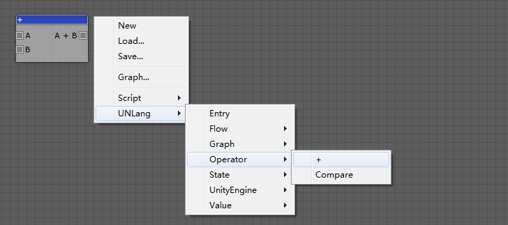

UNLang Graph可以将UNLang脚本打包成一个独立的模块，并被其他脚本重用。是UNLang抽象脚本并提供的一种更高层的重用机制。
使用者需要做的关键步骤是需要在UNLang脚本中连接In和Out模组来定义Graph的输入参数和输出结果。
输入值
一个Graph应该定义输入值，这样UNLang就可以理解Graph的入口，并知道如何连接其他模组。就类似于函数的输入参数。
使用
UNLang/Graph/In模块。
返回值
一个Graph如果存在返回值也可以定义输出结果。
使用
UNLang/Graph/Out模块。
例子
我们来制作一个计算器的整数加法（a + b = c）功能。
创建add Graph
① 创建”+”模块
- 如下图，使用
UNLang/Operator/+模块。
 - 在
Inspector窗口中设置+模块值类型为Integer。
② 连接”In”和”Out”模块
- 添加
UNLang/Graph/In和UNLang/Graph/Out模组。 - 在
Inspector窗口中设置In和Out模块的值类型是Integer。 - 如下图连接。

③ 存储到add.bytes文件
使用add Graph
- 通过
Graph...菜单并选择add.bytes文件来导入addGraph。 - 如下图设置脚本：两个常量值，和打印到console窗口。
- 使用
Entry模块作为脚本入口。
总结
Graph将隐藏所有细节的模组，而只显示脚本的In和Out管脚。因此Graph是UNLang抽象复杂脚本并使其可以被其他脚本重用的一种较好的方式。